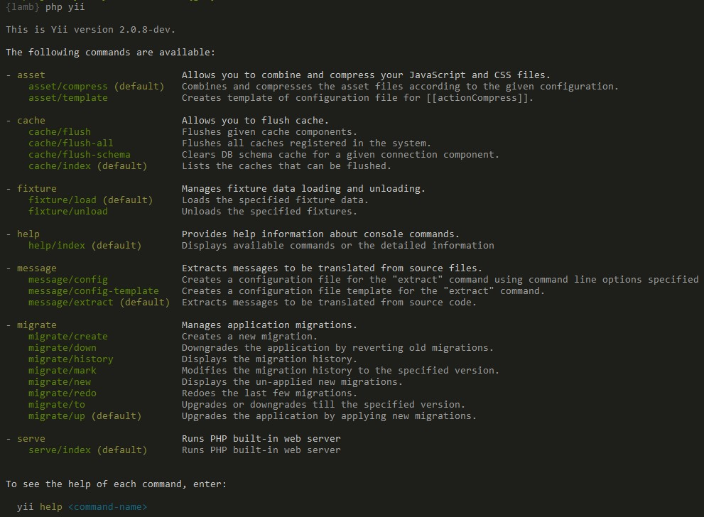

コンソールアプリケーション ¶
ウェブアプリケーションを構築するための豊富な機能に加えて、Yii はコンソールアプリケーションのためのフル装備のサポートを持っています。 コンソールアプリケーションは、主として、ウェブサイトのために実行する必要のあるバックグラウンドのタスクやメンテナンスのタスクを作成するために使われるものです。
コンソールアプリケーションの構造は Yii のウェブアプリケーションのそれと非常に良く似ています。 コンソールアプリケーションは一つまたは複数の yii\console\Controller クラスから構成されます。 コントローラはコンソール環境ではしばしば「コマンド」と呼ばれます。 また、各コントローラは、ウェブのコントローラと全く同じように、一つまたは複数のアクションを持つことが出来ます。
プロジェクトテンプレートは、両方とも、既にコンソールアプリケーションを持っています。
レポジトリのベースディレクトリにある yii スクリプトを呼び出すことによって、コンソールアプリケーションを実行することが出来ます。
このスクリプトは、何もパラメータを追加せずに実行すると、利用できるコマンドの一覧を表示します。

スクリーンショットに表示されているように、デフォルトで利用できる一連のコマンドが Yii によって既に定義されています。
- yii\console\controllers\AssetController - JavaScript と CSS ファイルを結合して圧縮することが出来ます。 このコマンドについては、アセットの節 でさらに学習することが出来ます。
- yii\console\controllers\CacheController - アプリケーションのキャッシュをフラッシュすることが出来ます。
- yii\console\controllers\FixtureController - テストのために、フィクスチャデータのロードとアンロードを管理します。 このコマンドについては テストのフィクスチャの節 で詳細に説明されています。
- yii\console\controllers\HelpController - コンソールコマンドについてのヘルプ情報を提供します。 これがデフォルトのコマンドであり、上のスクリーンショットで見た出力を表示するものです。
- yii\console\controllers\MessageController - ソースファイルから翻訳すべきメッセージを抽出します。 このコマンドについてさらに学習するためには、国際化の節 を参照してください。
- yii\console\controllers\MigrateController - アプリケーションのマイグレーションを管理します。 データベースのマイグレーションについては、データベースのマイグレーションの節 で詳しく説明されています。
- yii\console\controllers\ServeController - PHP の内蔵ウェブサーバを走らせることが出来ます。
使用方法 ¶
コンソールのコントローラアクションは次の構文を使って実行します。
yii <route> [--option1=value1 --option2=value2 ... argument1 argument2 ...]
上記において、<route> はコントローラアクションへのルートを示すものです。
オプション (options) はクラスのプロパティに代入され、引数 (arguments) はアクションメソッドのパラメータとなります。
例えば、yii\console\controllers\MigrateController::$migrationTable として migrations を指定し、マイグレーションの上限を 5 と指定して yii\console\controllers\MigrateController::actionUp() を呼び出すためには、次のようにします。
yii migrate/up 5 --migrationTable=migrations
Note: コンソールで
*を使う場合は、"*"として引用符号で囲むことを忘れないでください。 これは、*をカレントディレクトリの全てのファイル名に置き換えられるシェルのグロブとして実行してしまうことを避けるためです。
エントリスクリプト ¶
コンソールアプリケーションのエントリスクリプトは、ウェブアプリケーションで使用されるブートストラップファイル index.php に相当するものです。
コンソールのエントリスクリプトは通常は yii と呼ばれるもので、アプリケーションのルートディレクトリに配置されています。
それは次のようなコードを含んでいます。
#!/usr/bin/env php
<?php
/**
* Yii console bootstrap file.
*/
defined('YII_DEBUG') or define('YII_DEBUG', true);
require(__DIR__ . '/vendor/autoload.php');
require(__DIR__ . '/vendor/yiisoft/yii2/Yii.php');
$config = require(__DIR__ . '/config/console.php');
$application = new yii\console\Application($config);
$exitCode = $application->run();
exit($exitCode);
このスクリプトはアプリケーションの一部として生成されるものです。
あなたの必要を満たすように、自由に編集して構いません。
エラー発生時にスタックトレースを見たくない、または、全体のパフォーマンスを上げたい、という場合は、YII_DEBUG 定数を false に設定することが出来ます。
ベーシックプロジェクトテンプレートでも、アドバンストプロジェクトテンプレートでも、コンソールアプリケーションのエントリスクリプトは、開発者に優しい環境を提供するために、デフォルトでデバッグを有効にしています。
構成情報 ¶
上記のコードで見るように、コンソールアプリケーションは、console.php という名前のそれ自身の構成情報ファイルを使用します。
このファイルの中で、さまざまな アプリケーションコンポーネント、取り分け、コンソールアプリケーションのためのプロパティを構成しなければなりません。
ウェブアプリケーションとコンソールアプリケーションが構成情報のパラメータと値を数多く共有する場合は、共通の部分を独立したファイルに移動して、そのファイルを両方のアプリケーション (ウェブとコンソール) の構成情報にインクルードすることを検討しても良いでしょう。 その例を「アドバンスト」プロジェクトテンプレートの中で見ることが出来ます。
Tip: 場合によっては、エントリスクリプトで指定されているのとは異なるアプリケーション構成情報を使ってコンソールコマンドを実行したいことがあります。 例えば、
yii migrateコマンドを使ってテストのデータベースをアップグレードするとき、データベースが個々のテストスイートの中で構成されているような場合です。 構成情報を動的に変更するためには、コマンドを実行するときにappconfigオプションを使ってカスタムの構成情報ファイルを指定するだけで大丈夫です。yii <route> --appconfig=path/to/config.php ...
あなた自身のコンソールコマンドを作成する ¶
コンソールのコントローラとアクション ¶
コンソールコマンドは、yii\console\Controller を拡張するコントローラクラスとして定義することが出来ます。 コントローラクラスの中で、コントローラのサブコマンドに対応する一つまたは複数のアクションを定義します。 各アクションの中で、その特定のサブコマンドのための適切なタスクを実装するコードを書きます。
コマンドを実行するときは、コントローラのアクションに対するルートを指定する必要があります。
例えば、ルート migrate/create は、yii\console\controllers\MigrateController::actionCreate() アクションメソッドに対応するサブコマンドを呼び出します。
実行時に提供されたルートにアクション ID が含まれない場合は、(ウェブのコントローラの場合と同じように) デフォルトのアクションが実行されます。
オプション ¶
yii\console\Controller::options() メソッドをオーバーライドすることによって、コンソールコマンド (controller/actionID) で利用できるオプションを指定することが出来ます。
このメソッドはコントローラクラスのパブリックなプロパティのリストを返さなければなりません。
コマンドを実行するときは、--OptionName=OptionValue という構文を使ってオプションの値を指定することが出来ます。これはコントローラクラスの OptionName プロパティに OptionValue を割り当てるものです。
オプションのデフォルト値が配列型である場合、実行時にこのオプションをセットすると、オプションの値は、入力文字列をカンマで分離することによって、配列に変換されます。
オプションのエイリアス ¶
バージョン 2.0.8 以降、コンソールコマンドは、オプションにエイリアスを追加するための yii\console\Controller::optionAliases() メソッドを提供しています。
エイリアスを定義するためには、コントローラで yii\console\Controller::optionAliases() をオーバーライドします。 例えば、
namespace app\commands;
use yii\console\Controller;
class HelloController extends Controller
{
public $message;
public function options()
{
return ['message'];
}
public function optionAliases()
{
return ['m' => 'message'];
}
public function actionIndex()
{
echo $this->message . "\n";
}
}
これで、次の構文を使ってコマンドを走らせることが出来るようになります。
./yii hello -m=hello
引数 ¶
オプションに加えてに、コマンドは引数を取ることも出来ます。 引数は、リクエストされたサブコマンドに対応するアクションメソッドへのパラメータとして渡されます。 最初の引数は最初のパラメータに対応し、二番目の引数は二番目のパラメータに対応し、以下同様です。 コマンドが呼び出されたときに十分な数の引数が提供されなかったときは、対応するパラメータは、定義されていれば、宣言されているデフォルト値をとります。 デフォルト値が設定されておらず、実行時に値が提供されなかった場合は、コマンドはエラーで終了します。
array タイプヒントを使って、引数が配列として扱われるべきことを示すことが出来ます。
配列は入力文字列をカンマで分割することによって生成されます。
次に引数を宣言する方法を示す例を挙げます。
class ExampleController extends \yii\console\Controller
{
// コマンド "yii example/create test" は "actionCreate('test')" を呼び出す
public function actionCreate($name) { ... }
// コマンド "yii example/index city" は "actionIndex('city', 'name')" を呼び出す
// コマンド "yii example/index city id" は call "actionIndex('city', 'id')" を呼び出す
public function actionIndex($category, $order = 'name') { ... }
// コマンド "yii example/add test" は "actionAdd(['test'])" を呼び出す
// コマンド "yii example/add test1,test2" は "actionAdd(['test1', 'test2'])" を呼び出す
public function actionAdd(array $name) { ... }
}
終了コード ¶
終了コードを使うことはコンソールアプリケーション開発のベストプラクティスです。
コマンドは何も問題が無かったことを示すために 0 を返すのが慣例です。
コマンドが 1 以上の値を返したときは、何かエラーを示唆するものとみなされます。
返される数値がエラーコードであり、それによってエラーに関する詳細を見出すことが出来る場合もあります。
例えば、1 は一般的な未知のエラーを示すものとし、2 以上の全てのコードは特定のエラー、例えば、入力エラー、ファイルが見つからない、等々を示すものとすることが出来ます。
コンソールコマンドに終了コードを返させるためには、単にコントローラのアクションメソッドで整数を返すようにします。
public function actionIndex()
{
if (/* 何らかの問題が発生 */) {
echo "A problem occurred!\n";
return 1;
}
// 何かをする
return 0;
}
いくつか使用できる事前定義された定数があります。
- yii\console\Controller::EXIT_CODE_NORMAL - 値は
0 - yii\console\Controller::EXIT_CODE_ERROR - 値は
1
もっと多くのエラーコードの種類がある場合は、コントローラで意味のある定数を定義するのが良いプラクティスです。
書式設定と色 ¶
Yii のコンソールコマンドは出力の書式設定をサポートしています。 これは、コマンドを走らせている端末がサポートしていない場合は、自動的に書式設定の無い出力にグレードダウンされます。
書式設定された文字列を出力することは簡単です。 ボールドのテキストを出力するには、次のようにします。
$this->stdout("Hello?\n", Console::BOLD);
複数のスタイルを動的に結合して文字列を構成する必要がある場合は、yii\helpers\Console::ansiFormat() を使うほうが良いでしょう。
$name = $this->ansiFormat('Alex', Console::FG_YELLOW);
echo "Hello, my name is $name.";